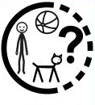
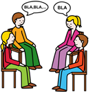
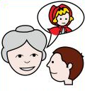
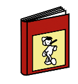

Diccionario
Audiovisual

Definición:
Que utiliza a la vez el oído y la vista.
Ejemplo:
La televisión es un medio audiovisual.
Cómic
Definición:
Historia explicada mediante viñetas.
Ejemplo:
Me encanta leer cómics de aventuras.
Comunicarnos

Definición:
Dar y/o recibir información entre dos o más personas.
Ejemplo:
Los dos nos comunicamos por una llamada de teléfono.
Cuentista
Definición:
Persona que cuenta historias.
Ejemplo:
Me encantaría ser un buen cuentista.
Descripción

Definición:
Texto en el que se dice con detalle cómo son las personas, los animales y /o las cosas.
Ejemplo:
Yo hice una descripción de mi compañero de clase.
.
Diálogo

Definición:
Conversación hablada o escrita entre dos o más personas.
Ejemplo:
Escribe un diálogo entre dos personas.
Digital
Definición:
Que se usa con los dedos.
Ejemplo:
Me he comprado un termómetro digital.
Edición
Definición:
Creación o modificación de un fichero informático.
Ejemplo:
La edición del trabajo de lengua me llevará mucho tiempo.
Espacio
Definición:
Lugar en el que pasa una acción.
Ejemplo:
La historia ocurre en un espacio grande y verde.
Fantástico

Definición:
Que solo existe en la imaginación.
Ejemplo:
Los unicornios son seres fantásticos.
Grabación

Definición:
Acción de grabar en vídeo algo que está sucediendo.
Ejemplo:
Nos lo pasamos muy bien durante la grabación del vídeo.
Herramientas multimedia
Definición:
Que reúne distintos medios como audio, vídeo y televisión.
Ejemplo:
Me gusta mucho hacer trabajos multimedia.
Ilustraciones
Definición:
Imágenes y dibujos sobre el tema del que se está hablando.
Ejemplo:
Me gustó el libro porque estaba lleno de ilustraciones.
Narración

Definición:
Relato oral o escrito que cuenta algo que ha sucedido.
Ejemplo:
Oí la narración muy atenta.
Narrador
Definición:
Persona que cuenta historias.
Ejemplo:
Me encantaría ser un buen narrador.
Pasado
Definición:
Es un momento que ya ha ocurrido.
Ejemplo:
El sábado pasado comí con mis amigos.
Personajes
Definición:
Persona o animal real o imaginado que participa en un cuento o película.
Ejemplo:
Mi personaje favorito es Capitán América.
Presente

Definición:
Lo que está ocurriendo en el momento.
Ejemplo:
En el presente todo es mejor.
Real

Definición:
Que existe.
Ejemplo:
Puedes tocarlo porque es real.
Red

Definición:
Internet
Ejemplo:
Voy a buscar información en la red.
Redes sociales

Definición:
Programas de internet con los que podemos comunicarnos.
Ejemplo:
Yo subo mis fotos de animales a una red social.
Relato

Definición:
Cuento breve.
Ejemplo:
Mi madre me ha contado un relato muy divertido.
Reto

Definición:
Actividad que realiza una persona superando dificultades.
Ejemplo:
Este problema es todo un reto.
Tiempo
Definición:
Momento en el que se realiza una acción.
Ejemplo:
Quiero pasar más tiempo con mis amigos.